품질경영산업기사 (2016-10-01 기출문제)
1과목: 실험계획법
1. 3×3 라틴방격법에서 오차의 자유도(ve)는?
- 1
- 2
- 3
- 4
(정답률: 65%)

2. 반복이 2회인 2요인 실험(이원배치 실험)에서 A요인의 수준은 4, B요인의 수준은 6이다. 특성치를 조사하여 분산분석을 실시한 후, 교호작용 A×B는 유의하지 않아서 오차항에 풀링(pooling)하였다. 풀링 후 오차의 자유도는 얼마인가?
- 25
- 30
- 35
- 39
(정답률: 61%)
3. 모수요인 A가 3수준, 모수요인 B가 4수준인 2요인 실험(이원배치 실험)에서 아래의 데이터를 얻었을 때 μ(A1)의 신뢰구간을 신뢰율 95%로 추정하면 약 얼마인가? (단, t0.975(6)=2.447이다.)
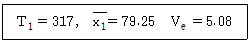
- 75.424~83.683
- 75.485~83.754
- 76.066~82.434
- 76.492~82.008
(정답률: 30%)
4. 데이터의 구조식이 다음과 같은 반복수가 일정하지 않은 1요인 실험(이원배치 실험)의 경우 요인 A의 기대평균제곱 E(VA)의 일반식은? (단, A요인은 모수이다.)
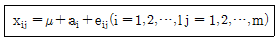
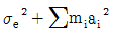
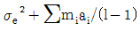
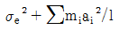
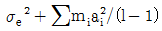
(정답률: 56%)
5. 계량형 변수로 취급하기 용이한 것은?
- 온도
- 부적합수
- 성별
- 부적합품여부
(정답률: 69%)
6. 다음은 반복이 일정한 1요인 실험(일원배치 실험)변량모형에 대한 데이터 구조식을 표현한 것이다. 가정 중 틀린 것은?
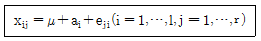
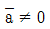
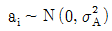
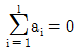
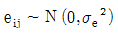
(정답률: 52%)
7. 난괴법에 관한 설명으로 가장 적절한 것은?
- 2요인 변량의 반복이 있는 2요인 실험(이원배치 실험)
- 2요인 변량의 반복이 없는 2요인 실험 (이원배치 실험)
- 1요인 모수, 1요인 변량의 반복이 없는 2요인 실험(이원배치 실험)
- 1요인 모수, 1요인 변량의 반복이 있는 2요인 실험(이원배치 실험)
(정답률: 49%)
8. 난괴법에서 모수요인 A의 수준수는 5, 블록요인 B의 수준수는 3일 경우, 오차항의 자유도(ve)는 얼마인가?
- 2
- 4
- 8
- 10
(정답률: 68%)
9. L4(23)형 직교배열표에 관한 설명 중 틀린 것은?
- 열의 수는 3이다.
- 실험횟수는 4이다.
- 총자유도는 3이다.
- 각 행의 자유도는 1이다.
(정답률: 49%)
10. 다음은 반복 없는 2요인 실험(이원배치 실험)의 분산분석표이다. 오차항의 자유도(ve)는?
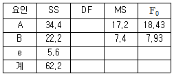
- 6
- 8
- 9
- 12
(정답률: 66%)
11. 요인 A의 수준수 ℓ=5, 요인 B의 수준수 m=4인 반복이 없는 2요인 실험(이원배치 실험)에서 결측치가 1개 있을 때 오차항의 자유도 (ve)는 얼마인가?
- 6
- 11
- 12
- 18
(정답률: 46%)
12. 실험을 시간적 혹은 공간적으로 분할하여 그 내부에서 실험의 환경이 균일하도록 만들어 놓은 것을 무엇이라고 하는가?
- 블록
- 교락
- 교호
- 직교
(정답률: 75%)
13. 다음 표와 같이 1요인 실험(일원배치 실험) 데이터에서 총제곱합(ST)은 약 얼마인가?
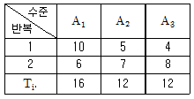
- 5.33
- 23.33
- 266.67
- 284.67
(정답률: 49%)
14. Ls(27)의 표준 직교배열표를 사용하여 다음과 같이 배치하였을 때 교호작용 B×C의 제곱합(SB×C)은 얼마인가?
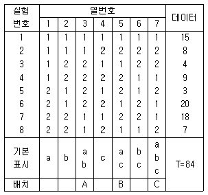
- 8
- 12
- 16
- 84
(정답률: 55%)
15. 어떤 재료의 온도(x)와 강도(y)와의 관계를 조사한 결과 Sxx=90이고, Sxy=30이었다. 회귀에 의한 제곱합(SR)은 얼마인가?
- 0.33
- 3
- 10
- 270
(정답률: 49%)
16. 변량모형의 1요인 실험(일원배치 실험)에 해당되지 않는 것은?
- 금속을 ℓ종류 선택하여 어떤 종류가부식에 강한지 실험하였다.
- 원료가 담겨 있는 도료 N통 중 ℓ박스를 선택하여 실험하였다.
- 검사원을 임의로 ℓ명 선택하여 동일 시료를 r회 측정하게 하였다.
- 실험일을 ℓ일 선택하여 실험일자에 영향을 받지 않는지 실험하였다.
(정답률: 56%)
17. 반복수가 같은 1요인 실험(일원배치 실험)의 분산분석표에서 각 수준의 모평균을 추정하고 싶다. 확률 95%의 신뢰구간의 폭은 약 얼마인가? (단, t0.975(12)=2.18이다.)
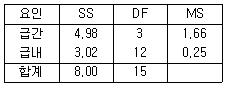
- ±0.315
- ±0.545
- ±0.553
- ±0.629
(정답률: 53%)
18. 다음 분산분석표에서 요인 A의 기여율(ρA)은 약 얼마인가?
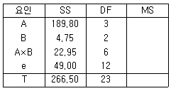
- 33.4%
- 41.5%
- 66.6%
- 71.2%
(정답률: 63%)
19. 요인 A를 4수준, 요인 B를 3수준으로 실험한 결과, 결측치가 1개 발생하였다. 이 데이터를 Yates의 방법으로 결측치를 추정하여 모수모형 2요인 실험(이원배치 실험)의 분삭 분석을 실시하였다. 다음 중 틀린 것은?
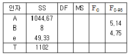
- 오차의 평균제곱(Ve)은 약 9.87이다.
- 요인 A의 자유도는 3, 요인 B의 자유도는 2이다.
- 요인 A의 분산비는 약35.29로 유의수준 5%로 유의하다.
- 요인 B의 분산비가 1보다 적으므로 공정에서 관리하여야 할 인자로 판명되었다.
(정답률: 48%)
20. 다음 표는 xijk=(xijk-85.0)×10으로 수치변환된 라틴방격법의 실험 데이터이다. 요인 C의 제곱합(SC)을 구하면?
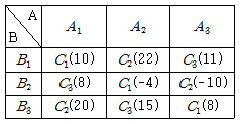
- 0.4235
- 0.6878
- 0.7254
- 0.8089
(정답률: 45%)
2과목: 통계적품질관리
21.  관리도의 특징으로 맞는 것은?
관리도의 특징으로 맞는 것은?
- 주로 부적합품률을 나타낸 관리도이다.
- 계수형 관리도(
 관리도)와 계수형 관리도(R관리도)를 혼합한 관리도이다.
관리도)와 계수형 관리도(R관리도)를 혼합한 관리도이다. - 평균을 위한
 관리도와 산포를 위한 R관리도를 함께 작성하는 관리도이다.
관리도와 산포를 위한 R관리도를 함께 작성하는 관리도이다. - 관리상태에 대한 해석
 관리도와 R관리도를 각각 운용하는 것에 비해서는 비효율적이다.
관리도와 R관리도를 각각 운용하는 것에 비해서는 비효율적이다.
(정답률: 53%)
22. 계수 및 계량 규준형 1회 샘플링검사(KS Q 0001 : 2013)에서 어떤 제품의 특성치 평균값이 540g 이상인 로트는 될 수 있는 한 합격시키고 싶으나, 평균값이 500g 이하인 로트는 될 수 있는 한 불합격시키고 싶다. 특성치의 분포는 N(m, 202)이라 할 때, α=0.⑤, β=0.10을 만족하는 계량 규준형 1회 샘플링 검사방식의 표본의 크기(n)와 합격판정치( )는?
)는?
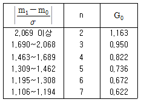
- n=3, 합격판정치(
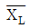
= 521.00 - n=3, 합격판정치(
 = 559.00
= 559.00 - n=4, 합격판정치(
 = 521.00
= 521.00 - n=4, 합격판정치(
 = 523.56
= 523.56
(정답률: 34%)
23. p 관리도에 대한 설명으로 틀린 것은?
- 일반적으로 X관리도에 비해 표본의 크기가 더 크다.
- 공정 부적합품률을 관리하기 위한 목적으로 주로 이용한다.
- 계수형 관리도 중에서 가장 널리 이용되는 관리도라 할 수 있다.
- 합격판정을 위해 관리한계가 중심선에서 2σ 떨어진 2σ법을 이용한다.
(정답률: 66%)
24. 반응온도(x)와 수율(y)의 관계를 조사한 결과 확률변수 X의 제곱합 Sxx=10, 학률변수 Y의 제곱합 Sxy=25, 확률변수 X, Y의 곱의 합 Sxy=15이었다. x에 대한 y의 회귀계수는 얼마인가?
- 0.67
- 1.50
- 1.67
- 2.50
(정답률: 45%)
25.
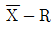
관리도에서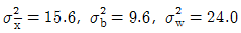
일 때, 표본의 크기(n)는 얼마인가?- 2
- 3
- 4
- 5
(정답률: 62%)
26. 미리 지정된 공정 기준값이 주어지지 않는 경우
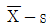
관리도를 작성할 때 관리도의 관리상한(UCL)을 구하는 식으로 맞는 것은?
관리도의 관리상한(UCL)을 구하는 식으로 맞는 것은?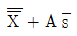
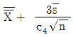
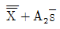
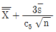
(정답률: 49%)
27. 전수검사에 비해 샘플링검사가 유리한 경우에 해당되지 않는 것은?
- 검사항목이 적을 때
- 생산자에게 품질향상의 자극을 주고 싶을 때
- 검사비용이나 검사공수(工數)를 적게 하고자 할 때
- 다수ㆍ다량의 것으로 부적합품의 혼입이 어느 정도 허용될 때
(정답률: 60%)
28. u 관리도의 관리한계를 구하는 공식으로 맞는 것은? (단, 관리상한은 UCL, 관리하한은 LCL이다.)
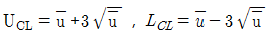
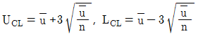
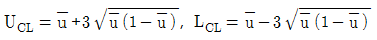
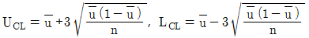
(정답률: 54%)
29. 모분산이 설정된 기준치보다 작다고 할 수 있는가의 검정에서 귀무가설을 기각하려면 검정통계량이 어떠한 전제조건을 만족해야 하는가?
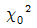
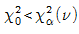
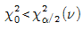
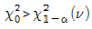
(정답률: 38%)
30. 과거 Y사에서 생산하는 핸드폰 케이스에는 모부적합수 m=6이었다. 최근 새로운 생산 설비로 교체를 한 후 부적합수를 확인하였더니 c=1 이었다. 위험률 5%에서 모부적합수는 작아졌다고 할 수 있겠는가?
- 알 수 없다.
- 같다고 할 수 있다.
- 작아졌다고 할 수 없다.
- 작아졌다고 할 수 있다.
(정답률: 52%)
31. 표본의 크기(n)가 6이고, 제곱합(S)이 5.84이다. 만약
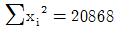
이라면,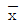
의 값은 약 얼마인가?- 51.07
- 53.42
- 54.47
- 58.97
(정답률: 40%)
32. 계수형 샘플링검사 절차(KS Q ISO 2859-1 : 2014)의 약어의 내용 중 틀린 것은?
- LQ : 허용품질
- AQL : 합격품질한계
- AOQ : 평균출검품질
- AOQL : 평균출검풀질한계
(정답률: 58%)
33. n=60, c-3인 계수 규준형 1회 샘플링검사 방식과 동일한 OC곡선을 갖는 계수치 축차샘플링 검사방식(KS Q ISO 8422 :2009)에서 누계 샘플크기 중지값 nt는?
- 30
- 60
- 90
- 120
(정답률: 54%)
34. 어떤 제품의 길이를 6회 측정하여 아래와 같은 데이터를 얻었다. 이 제품의 모평균에 대한 신뢰구간을 구하면 약 얼마인가? (단, 신뢰율은 95%이며, t0.975(5)=2.571, t0.975(6)=2.447이다.)
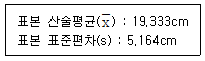
- 13.913≤μ≤24.753
- 14.175≤μ≤24.492
- 17.436≤μ≤21.202
- 17.530≤μ≤21.135
(정답률: 52%)
35. 슈하트(Shewhart) 관리도에서 3σ관리한계를 2σ관리한계로 바꿀 경우 나타나는 현상으로 맞는 것은?
- 제1종의 오류(α)가 감소한다.
- 제2종의 오류(β)가 감소한다.
- 제1종의 오류(α)와 제2종의 오류(β)가 모두 감소한다.
- 제1종의 오류(α)과 제2종의 오류(β)가 모두 증가한다.
(정답률: 55%)
36. 통계적 추정에 있어 추정량의 분산이 작을수록 바람직한 성질은?
- 유효성
- 불편성
- 일치성
- 충분성
(정답률: 56%)
37. OC곡선에서 소비자 위험이 증가하는 샘플링 방법은? (단, 로트의 크기는 샘플의 크기에 비해 충분히 크다.)
- 로트의 크기를 작게 한다.
- 표본의 크기와 합격판정 개수의 크기를 크게 한다.
- 표본의 크기를 크게 한다. 합격판정 개수를 작게 한다.
- 표본의 크기를 작게 하고, 합격판정 개수를 크게 한다.
(정답률: 63%)
38. 어떤 동전을 40회 던졌을 때 앞면이 24회 나왔다. 만약 이 동전을 무한히 던졌을 때 앞면이 나올 확률의 95% 신뢰구간을 구하면 약 얼마인가? (단, u0.975=1.96, u0.95=1.645이다.)
- 0.35~0.72
- 0.37~0.63
- 0.45~0.75
- 0.48~0.77
(정답률: 40%)
39. 정규분포를 따르는 로트에서, 표본의 크기를 n으로 하여 랜덤하게 추출하는 경우 표본평균(
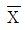
)의 표준편차는?- nσ
- √nσ
- σ/n
- σ/√n
(정답률: 65%)
40. 갑, 을 2개의 주사위를 던졌을 때 적어도 한 쪽에 짝수의 눈이 나타날 확률은 얼마인가?
- 1/4
- 1/2
- 3/4
- 4/5
(정답률: 69%)
3과목: 생산시스템
41. 표의 데이터를 참조하여 5개월 이동평균법에 의한 8월의 판매실적은 약 몇 개인가?
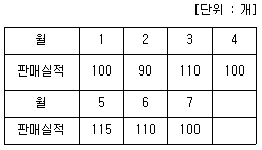
- 1⑤개
- 106개
- 107개
- 108개
(정답률: 65%)
42. 설비배치의 형태 중 U-line이 추구하는 것이 아닌 것은?
- 소인화의 실현
- 흐름작업의 실현
- 대량생산의 실현
- 공정 부적합품률 0의 실현
(정답률: 56%)
43. 메모모션 스터디의 특징이 아닌 것은?
- 반복적인 작업에 적합하다.
- 사이클이 긴 작업 기록에 알맞다.
- 배치나 운반개선을 행하는 데 적합하다.
- 불규칙적인 작업을 기록하는 데 편리하다.
(정답률: 37%)
44. 기업 목적을 효율적으로 달성하기 위해 자사의 능력을 핵심부분에 집중시키고 기업기능의 일부를 외부의 조직을 활용하여 처리하는 경영기법은?
- 벤치마킹
- 모듈러생산
- 아웃소싱
- 리엔지니어링
(정답률: 58%)
45. MRP의 중요 입력 정보에 해당하지 않는 것은?
- BOM
- 원가정보
- 주일정계획
- 재고정보
(정답률: 50%)
46. 생산시스템을 유형에 따라 분류하였을 때 개별생산시스템의 특징이 아닌 것은?
- 생산의 각 공정에는 대기 중인 원자재나 재공품이 있는 것이 보통이다.
- 주문이 있기 전까지는 정확한 생산예측이 어려우나 원자재의 계획구매는 용이하다.
- 생산공정의 단계별 가공시간은 주문에 따라 다르므로 생산의 흐름이 원활하지 못하다.
- 주문별 가공시간의 정확한 예측이 어려워 납기에 맞출 수 있도록 전도관리에 중점을 둔다.
(정답률: 48%)
47. WF(Work factor)와 MTM(Method time measurement)의 공통점에 속하는 것은?
- 시간단위가 같다.
- 작업속도가 같다.
- 기본동작이 같다.
- 수행도 평가가 필요 없다.
(정답률: 52%)
48. PERT/CPM에서 주공정(Critical Path)이란?
- 여유시간이 제일 긴 공정
- 예상소요시간이 제일 짧은 공정
- 여유시간의 합계가 제일 긴 공정
- 예상소요시간의 합계가 제일 긴 공정
(정답률: 48%)
49. 활동상호관계분석표에서 배치도를 그릴 때 사용하는 접근도 표시방법에 대한 설명 중 틀린 것은?
- 접근도 I를 갖는 활동은 중요함을 나타내며 2선으로 표시한다.
- 접근도 O를 갖는 활동은 보통임을 나타내며 1선으로 표시한다.
- 접근도 A를 갖는 활동은 반드시 인접해있어야 하며 4선으로 표시한다.
- 접근도 U를 갖는 활동은 중요하지 않음을 나타내며 일점쇄선으로 표시한다.
(정답률: 47%)
50. Line balance효율의 계산에 직접적으로 필요없는 것은?
- 사이모 차트
- 애로공정의 공정시간
- 작업자 혹은 작업장 수
- 각 작업의 공정시간 합계
(정답률: 52%)
51. 동작의 속도를 평가하여 1차 평가를 한후, 작업의 난이도를 반영하여 2차 평가를 하는 수행도 평가기법은?
- 평준화법
- 웨스팅하우스법
- 레벨링법
- 객관적 레이팅법
(정답률: 36%)
52. 일정계획의 효과를 측정하는 데 사용되는 평가기준으로 가장 거리가 먼 것은?
- 납기준수율
- 표준시간의 설정
- 기계설비의 가동률
- 지연작업의 비율
(정답률: 40%)
53. 공정개선의 일반적인 4가지 목표에 해당되지 않는 것은?
- 품질의 향상
- 피로의 경감
- 수율의 감소
- 경비의 절감
(정답률: 48%)
54. 경제적주문량(EOQ)과 경제적생산량(EPQ)모형의 차이에 대한 설명으로 틀린 것은?
- EPQ에서 품절을 허용하고 EOQ에서는 허용하지 않는다.
- EOQ에서는 주문비용, EPQ에서는 생산준비비용을 고려한다.
- EOQ에서는 재고가 일시에 보충되는 것으로 가정하나 EPQ에서는 일정한 비율로 꾸준히 보충되 것으로 가정한다.
- EPQ는 자가생산되는 품목을, EOQ는 외부 공급원으로 부터 공급되는 품목을 대상으로 한다.
(정답률: 38%)
55. JIT의 작업현장 관리를 위한 5S 운동에 속하지 않는 것은?
- 정리(seiri)
- 청소(seisou)
- 습관화(shitsuke)
- 표준화(standardization)
(정답률: 69%)
56. 감도가 높은 계측장치를 사용하여 기계나 설비의 트러블을 예측해서 이에 따른 예방보전 활동을 하는 것으로 기계설비가 자동화되어 있는 장치산업에서 특히 중요한 것은?
- 자주보전
- 예지보전
- 수리보전
- 개량보전
(정답률: 66%)
57. 작업 A,B,C,D는 기계 1에서 가공한 후 기계 2에서 가공해야 한다. 존슨의 법칙을 적용하여 총작업시간을 최소화하는 작업의 처리 순서로 맞는 것은?
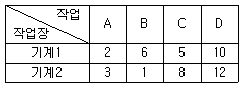
- A→C→D→B
- B→D→C→A
- A→D→C→B
- B→C→D→A
(정답률: 55%)
58. 자재기준표에 표시된 기준량에 자재예비량을 합한 것을 무엇이라고 하는가?
- 자재기준량
- 표준자재소요량
- 순자재소요량
- 평균자재소요량
(정답률: 45%)
59. TPM(total productive maintenance)활동의 특징이나 효과에 해당하지 않는 것은?
- 제조원단위를 증대시키기 위한 개선활동
- 깨끗한 공장, 안전한 현장 등 공장환경의 변화
- 개선의욕이 왕성, 제안건수의 증가 등 공장 종업원의 변화
- 설비공장의 감소, 품질 불량 감소 등 설비 및 기업체질의 변화
(정답률: 52%)
60. 1일 부하시간이 460분, 1일 가동시간이 400분 1일 생산량을 300개라 할 때 시간가동률은 약 얼마인가?
- 80%
- 85%
- 87%
- 90%
(정답률: 49%)
4과목: 품질경영
61. 품질보증의 사후대책에 해당되는 것은?
- 시장조사
- 기술연구
- 품질검사
- 고객에 대한 PR
(정답률: 49%)
62. 제품이 출하되어 소비자에게 판매된 다음 그 제품이 당초의 사용목적에 대하여 충분히 기능을 발휘하는가에 따라 소비자의 만족여부가 좌우된다. 이러한 사용품질에 대한 설명 중 틀린 것은?
- 사용품질은 경제적인 적정품질수준이 고려된다.
- 생산자와 소비자의 관심자 간에 틈이 점점 벌어지고 있어 제품설계의 최종적인 평가요소인 사용품질이 중요한 품질결정 문제가 되고 있다.
- 사용품질에서 품질의 소비자의 만족도로 보았을 때, 소비자가 만족할 수 있도록 제품의 사용품질을 높이려면 소비자의 부담(사용품질코스트)이 감소한다.
- 소비자는 하드웨어에서 취하는 서비스를 원하고 생산자는 하드웨어의 구성에 관심을 갖는 것과 같이 소비자의 관심사는 생산자의 관심사와 점점 틈이 벌어지고 있다.
(정답률: 70%)
63. 한국산업규격(KS A 0001:2015)에 따른 표준서의 구성순서를 바르게 나열한 것은?
- 본체→부속서→참고→해설
- 본체→부속서→해설→참고
- 본체→해설→참고→부속서
- 본체→해설→부속서→참고
(정답률: 58%)
64. 6시그마에 관한 설명으로 틀린 것은?
- 6시그마는 TQM에서 중시하는 처음부터 올바르게 행한다는 결함예방철학에 입각한 것이다.
- 6시그마 수준이란 공정의 중심에서 규격한계까지의 거리가 표준편차의 6배라는 뜻이다.
- 6시그마 경영이란 조직으로 하여금 자원의 낭비를 최소화하는 동시에 고객만족을 최대화하는 방법이다.
- 적합비용을 꾸준히 증가시키면 언젠가는 부적합비용의 감소가 더 작아지는데 이 시점이 최적품질수준이다.
(정답률: 64%)
65. 품질보증에서 사용되는 PL은 무엇의 약자인가?
- Plan Level
- Planning Level
- Product Liability
- Production Liability
(정답률: 61%)
66. 브레인스토밍의 4가지 원칙이 아닌 것은?
- 남의 발언을 비판하지 않는다.
- 자유분방한 분위기 조성 및 의견을 환영한다.
- 타인의 아이디어의 개선, 편승, 비약을 추구한다.
- 양은 적을지라도 구체적이고 상세한 아이디어를 만들어 낸다.
(정답률: 64%)
67. 사내표준화의 특징으로 틀린 것은?
- 하나의 기업 내에서 실시하는 활동
- 기업 내의 특정 부문과 계층에서 실시해야 하는 활동
- 사내관계자의 합의를 모은 후에 실시해야 하는 활동
- 사내표준은 기업의 조직원이 의무적으로 지켜야 하는 활동
(정답률: 75%)
68. 품질경영시스템-기본사항과 용어(KS Q ISO 9000:2015)에서 용어에 대한 설명으로 틀린 것은?
- 품질관리란 품질 요구사항을 충족하는데 중점을 둔 품질경영의 일부이다.
- 품질개선이란 품질 요구사항을 충족시키는 능력을 증진하는 데 중점을 둔 품질경영의 일부이다.
- 품질보증이란 품질 요구사항이 충족될 것이라는 신뢰를 제공하는 데 중점을 둔 품질경영의 일부이다.
- 품질기획이란 의도된 결과를 만들어 내기 위해 입력을 사용하여 상호 관련되거나 상호 작용하는 활동의 집합으로 품질경영의 일부이다.
(정답률: 77%)
69. 국제표준화기구(ISO)에서 사용되는 공식 언어가 아닌 것은?
- 영어
- 독일어
- 불어
- 러시아어
(정답률: 65%)
70. 경영목표를 달성함에 있어서 중점이 되는 과제와 이를 달성하기 위한 시책으로 전개하여 실행함으로써 기업목표를 달성할 수 있게 하는 것을 무엇이라고 하는가?
- 방침관리
- 기능별관리
- 품질보증관리
- 부문별관리
(정답률: 63%)
71. 일반적으로 계량형 데이터가 계수형 데이터에 비해 장점으로 틀린 것은?
- 계량형 데이터 정보의 활용도가 높다.
- 충분한 정보를 얻는 데 필요한 측정횟수가 적다.
- 동일한 계측횟수도 계수형보다 판별능력이 좋다.
- 계량형 측정기가 계수형 측정기보다 사용하기 더 용이하다.
(정답률: 65%)
72. 품질경영부문의 품질관리 활동에 있어서 필수적으로 확보해야 할 품질정보에 해당되지 않는 것은?
- 시장품질 정보
- 인사조직 정보
- 제조품질 정보
- 설계품질 정보
(정답률: 77%)
73. 3개의 품질을 조립하고자 한다. 부품의 표준편차가 각각 0.06mm, 0.08mm, 0.03mm라고 하면 3개 부품의 조립표준편차는 약 얼마인가?
- 0.104
- 0.386
- 0.412
- 0.486
(정답률: 50%)
74. 표준화를 전개할 때 그 대상을 파악하기 쉽도록 구성한 표준화의 구조(표준화 공간)에 해당하는 항목은?
- 주제, 국면, 수준
- 형식, 국면, 차원
- 주제, 차원, 수준
- 차원, 국면, 수준
(정답률: 62%)
75. 예방비용의 산출항목이 아닌 것은?
- 품질관리 교육비용
- 업무계획 추진비용
- 외주업체 지도비용
- 계량기 검ㆍ교정비용
(정답률: 68%)
76. 사내표준화에서 사내표준을 작성하는 대상은 공정변화에 대해 기여비율이 큰 것으로부터 중심적으로 취급하는 것이 효과적이다. 이 때 기여비율이 큰 경우에 해당되는 것이 아닌 것은?
- 관리자가 교체된 경우
- 산포가 큰 작업의 경우
- 작업의 중요한 개선이 발생한 경우
- 통계적 수법 등을 활용하여 공정을 관리하려는 경우
(정답률: 66%)
77. 전기조립품을 제조하는 공장에서 공정이 안정되어 있는가를 판단하기 위해 n=5, k=20의  관리도를 작성한 결과
관리도를 작성한 결과
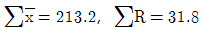
을 얻었으며 공정이 안정된 것으로 판정되었다. 공정능력치를 구하면 약 얼마인가? (단, n=5일 때, d2=2.326이다.)- ±0.795
- ±1.590
- ±2.⑤1
- ±4.101
(정답률: 35%)
78. 품질관리의 원칙이 아닌 것은?
- 예방의 원칙
- 전원참가의 원칙
- 과학적 접근의 원칙
- 품질관리 부문을 라인에 두는 원칙
(정답률: 49%)
79. 고객이 요구하는 참품질을 언어표현에 의해 체계화하여 이것과 품질특성과 관련을 짓고, 고객의 요구를 제품의 설계특성으로 변화시키며 품질설계를 실행해나가는 매트릭스도표가 매우 유용하게 사용되고 있다. 이와 같은 품질표를 사용하는 기법은?
- 연관도
- QFD
- 친화도
- FMEA/FTA
(정답률: 59%)
80. 현장의 문제점을 찾아내어 이를 해석하고, 그 문제의 재발을 방지하고 관리의 정착으로 연결시키고자 하는 QC 7가지 도구에 해당되지 않는 것은?
- 체크시트
- 작업공정도
- 특성요인도
- 파레토그림
(정답률: 61%)
오차의 자유도(ve)는 총 자유도에서 모든 효과의 자유도를 뺀 값이다. 즉, ve = vt - v행 - v열 - v대각선 이다.
3×3 라틴방격법에서 행, 열, 대각선 각각의 자유도는 2이다. 이는 각각의 합이 2이므로 (1+1=2)이다.
따라서, ve = 8 - 2 - 2 - 2 = 2 이다.